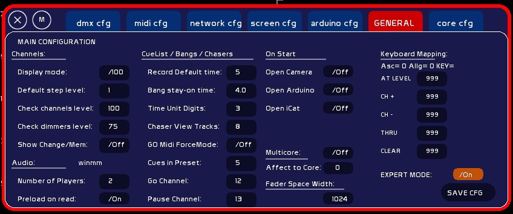
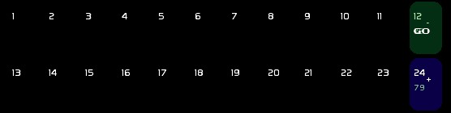
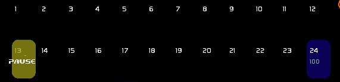

Le menu de configuration générale vous permet d'agir sur un certains nombres de paramètres de White Cat.
Lorsqu'un paramètre ne nécessite pas d'entrée, mais juste un click pour basculer d'état, il est affiché “/”. Sinon, il faut taper le chiffre désiré, puis clicker la case auquel affecter le paramètre.

En clickant /100 ou /255 White Cat est basculé en mode d'affichage Pourcentage (base 100) ou Dmx ( base 255) .
La valeur des flèches hautes et bas ainsi que la molette de la souris sur les circuits.
La valeur du circuit envoyé par l'action [CTRL][FLECHES GAUCHE/DROITE].
La valeur du gradateur envoyé par l'action [SHIFT][FLECHES GAUCHE/DROITE]. Ceci permet notamment de protéger ses lampes de 2 et 5kw.
Permet de faire clignoter les valeurs de circuits si elles sont différentes de la mémoire stockée en mémoire vive.
Permet d'afficher le nombre désiré de players audio. Il s'agit d'une option visuelle. Les players non affichés restent actifs ( banger et midi).
Quand ce mode est enclenché ( recommandé ), le fichier chargé dans un player est chargé en mémoire. Le désenclencher permet de le lire directement depuis le disque dur.
Le temps par défaut de IN et Out d'une mémoire, exprimé en secondes.
Le temps en secondes que reste accessible un banger pour le go back lorsqu'il enclenché à la souris depuis le panneau des 127 bangers ( entre les grandes commandes et le grand master ). Permet de couper les effets lancés par le banger actif.
Nombre de chiffres affichés après la virgule pour le time unit des chasers
Enclenche/désenclenche le ForceMode du pilotage midi du Go. Si ce mode est ON, et que le crossfade est en cours, presser la touche du GO en midi ne provoquera pas de pause, mais un JUMP. Valable uniquement pour le midi, pas pour le clavier, ni pour l'arduino.
permet d'afficher plus de 8 mémoires dans la liste du séquenciel.
De plus en plus d'utilisateurs de WhiteCat l'utilisent sur scène. Le performer, le conteur, le comédien peuvent avoir besoin de savoir si le déclenchement d'un crossfade est correctement effectué.
Le Go Channel et le Pause Channel sont des circuits qui vont servir de témoins lumineux de l'état du séquenciel, permettant à l'interprète de vérifier que le déclenchement du séquenciel est bien actif. En lançant le Go, le circuit défini flashera tant que le crossfade est en cours et, non en pause. Si le séquenciel est en pause, le circuit défini comme Pause Channel flashera.
Ce flash est exécuté dans l'affichage et en sortie dmx, il bypasse le grand master et le freeze.
Ces circuits quand ni go ni pause sont actifs sont mis à zéro et effacent toute autre donnée ( faders, mémoires, etc).
Ici, le circuit 12 est affecté en Go Channel, et le circuit 13 en Pause Channel:


Permet d'éviter de confirmer par [ENTER] ou [OK] les manipulations d'enregistrement, effacement, etc….
Ces options permettent d'empêcher ou de demander à whitecat de se connecter au matériel désiré à son démarrage:
WhiteCat recherche automatiquement la caméra présente sur le système, pour le tracking vidéo
WhiteCat recherche automatiquement à se connecter sur la carte Arduino et port COM. Attention ne pas enclencher si vous travaillez avec une carte dmx sur chipset FTDII.
Ouvre automatiquement le serveur sur le port IP configuré et enregistré.
Permet d'affecter WhiteCat à un coeur précis. Si vous avez plusieurs applications qui tournent en même temps, vous pouvez donc affecter WhiteCat au coeur 2, par ex, et l'autre application au coeur 1. Voir les patchs VVVV dans les ressources du forum.
Certains utilisateurs rencontrent des soucis avec leurs claviers, notamment sur les touches Enter * / + = et -. Généralement ce problème semble se poser quand le clavier a plusieurs fonctions et modes. Ce paramétrage est temporaire, la personnalisation du clavier étant prévue pour plus tard.
Pour affecter une touche qui n'est pas détectée par WhiteCat, il faut lire l'entrée ascii. Cette valeur, juste après Asc: doit être reportée dans la case de la fonction à éxecuter.
Si cette valeur est supérieure à 0 la fonction est émullable.
Pour désaffecter , donner comme valeur 999.